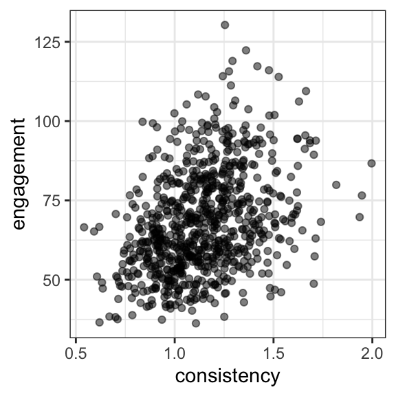
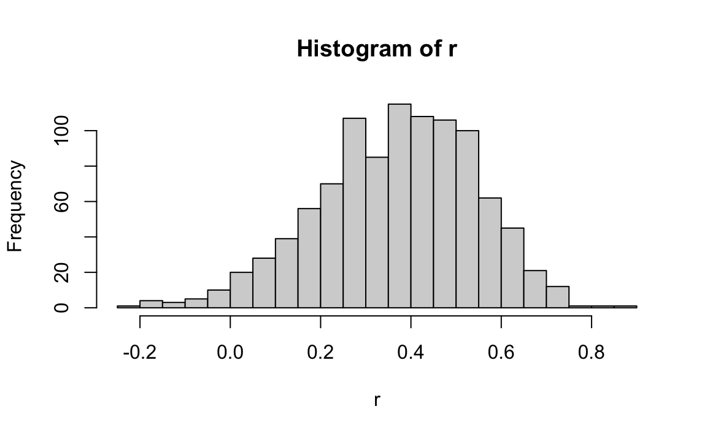
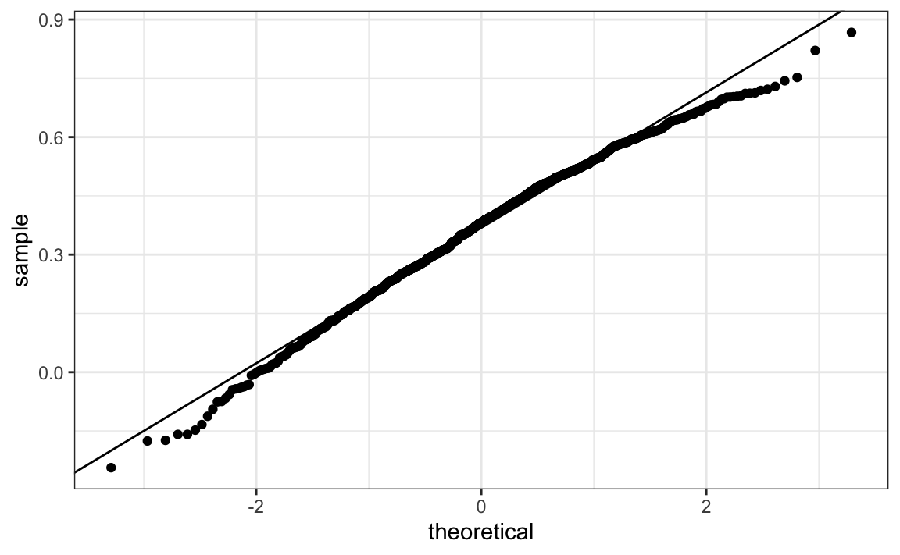
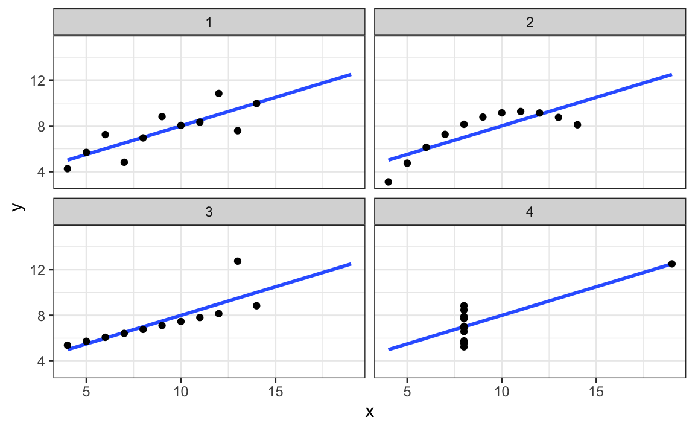
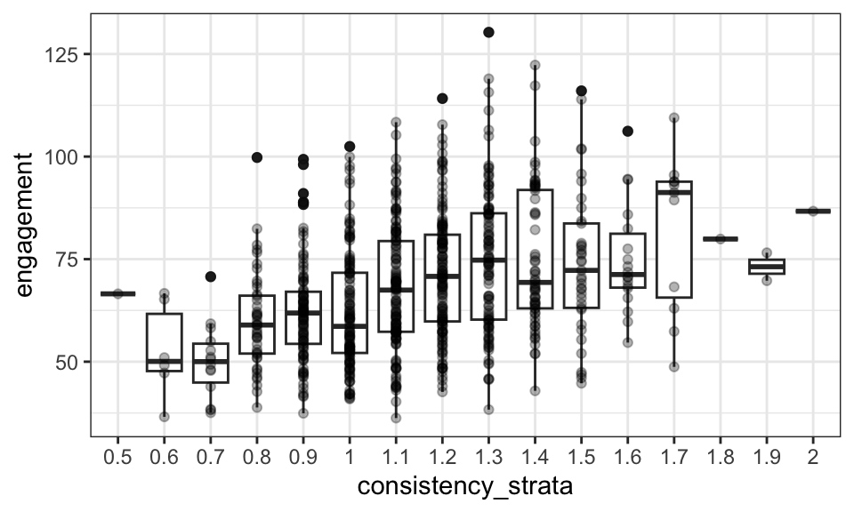
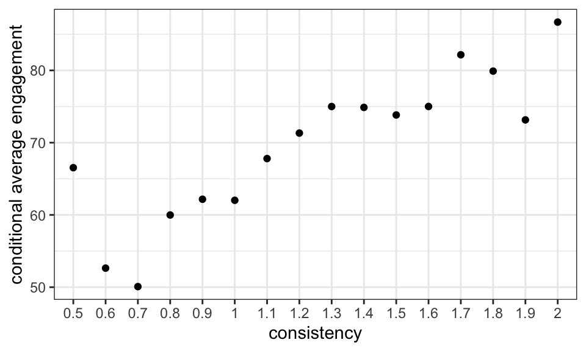
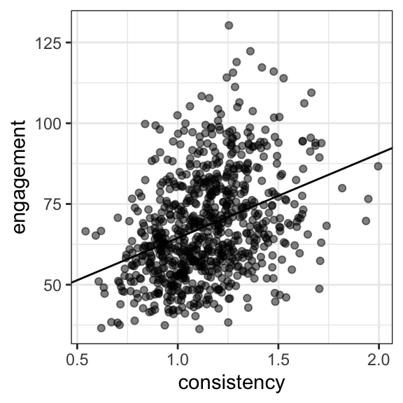
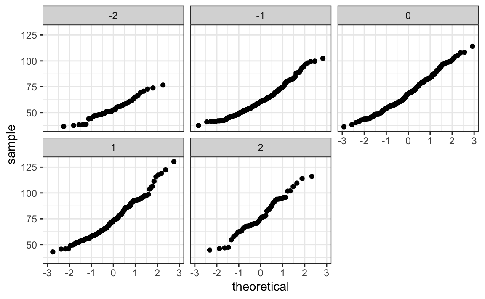
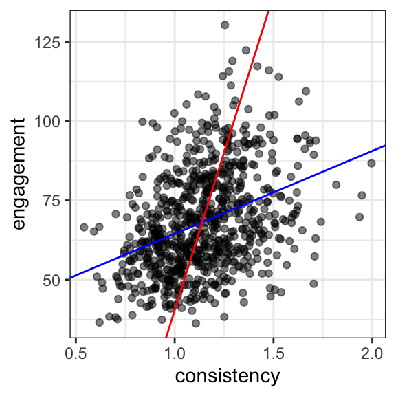
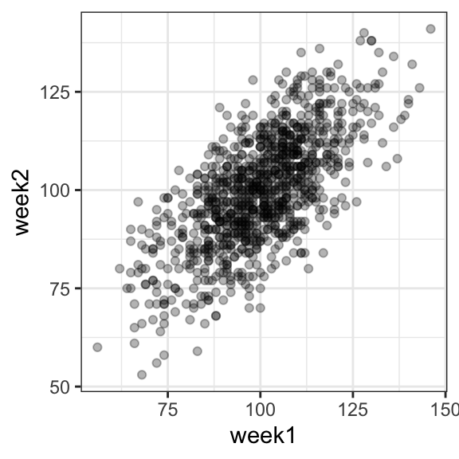

library(tidyverse)
library(behdslabs)25 Introduction to Regression
Original chapter by Rafael A. Irizarry, from Introduction to Data Science. Adapted by Giorgio Arcara: the datasets are replaced with behavioural ones and the code uses the tidyverse; some passages are shortened or rephrased; the text is otherwise Irizarry’s. Details in the CHANGELOG.
To understand the concepts of correlation and simple regression, we turn to a question that appears throughout this book: do users who are more consistent from one session to the next also engage more with an app? Regression itself was born from a similar question. Francis Galton1 studied variation and heredity in human traits, collecting data from families to investigate how characteristics are passed from parents to children. Through this work, he introduced the ideas of correlation and regression and explored how pairs of variables that follow a normal distribution are related. A central question he sought to answer was: How well can we predict a child’s height based on the parents’ height? The statistical tools he developed to address this question remain foundational and are now used in a wide range of applications, including the prediction of one behavioural measure from another. We conclude the chapter by discussing a concept known as the regression fallacy, a common misunderstanding that arises when interpreting regression results, and we illustrate it with a simulated example from a brain-training app.
25.1 Case study: do more consistent users engage more?
The app_engagement_experiment dataset in behdslabs records, for each user of an app, an engagement score and a session-to-session consistency index, among other variables that we will use in later chapters. Four users have no consistency index, so we drop them:
engagement <- app_engagement_experiment |>
filter(!is.na(consistency_index)) |>
select(consistency = consistency_index, engagement = engagement_score)Suppose we were asked to summarize the consistency and engagement data. We could use the two averages and two standard deviations as summaries:
engagement |>
summarise(mean(consistency), sd(consistency), mean(engagement), sd(engagement))
#> mean(consistency) sd(consistency) mean(engagement) sd(engagement)
#> 1 1.14 0.224 68.1 16.2However, this summary fails to describe an important characteristic of the data: the trend that the more consistent the user, the higher the engagement.
engagement |> ggplot(aes(consistency, engagement)) + geom_point(alpha = 0.5)
We will learn that the correlation coefficient is an informative summary of how two variables move together, and then motivate simple regression by noting how this can be used to predict one variable using the other.
25.2 The correlation coefficient
We met the correlation coefficient in Chapter 17: the average product of the two variables in standard units, a number between -1 and 1 that summarizes how strongly two variables go together along a straight line. For a list of pairs \((x_1, y_1), \dots, (x_n,y_n)\), the correlation is:
\[ \rho = \frac{1}{n} \sum_{i=1}^n \left( \frac{x_i-\mu_x}{\sigma_x} \right)\left( \frac{y_i-\mu_y}{\sigma_y} \right) \]
with \(\mu_x, \mu_y\) the averages of \(x_1,\dots, x_n\) and \(y_1, \dots, y_n\), respectively, and \(\sigma_x, \sigma_y\) the standard deviations. The Greek letter for \(r\), \(\rho\), is commonly used in statistics books to denote the correlation. It is not a coincidence that \(r\) is the first letter in regression. Soon, we learn about the connection between correlation and regression. (The function cor() divides by \(n-1\) instead of \(n\), as sd() does; see Chapter 17.)
The correlation between consistency and engagement is about 0.36:
cor(engagement$consistency, engagement$engagement)
#> [1] 0.363Sample correlation is a random variable
Before we continue connecting correlation to regression, let’s remind ourselves about random variability.
In most data analysis projects, we observe data that includes random variation. For example, in many cases, we do not observe data for the entire population of interest, but rather for a random sample. As with the average and standard deviation, the sample correlation is the most commonly used estimate of the population correlation. This implies that the correlation we compute and use as a summary is a random variable.
By way of illustration, let’s assume that the 776 users are our entire population. A less fortunate researcher can only afford to recruit a random sample of 25 users. The sample correlation can be computed with:
set.seed(1983)
r <- engagement |> slice_sample(n = 25, replace = TRUE) |>
summarise(r = cor(consistency, engagement)) |> pull(r)Because r is a random variable, we can run a Monte Carlo simulation to see its distribution:
N <- 25
r <- replicate(1000, {
s <- slice_sample(engagement, n = N, replace = TRUE)
cor(s$consistency, s$engagement)
})
hist(r, breaks = 20)
We see that the expected value of r is the population correlation:
mean(r)
#> [1] 0.369and that it has a relatively high standard error relative to the range of values r can take:
sd(r)
#> [1] 0.174So, when interpreting correlations, remember that correlations derived from samples are estimates containing uncertainty.
Also, note that because the sample correlation is an average of independent draws, the central limit actually applies: for large enough \(N\), the distribution of r is approximately normal with expected value \(\rho\) and standard deviation \(\frac{1-r^2}{\sqrt{N}}\). Note that the derivation of this standard deviation is complex and not shown here.
In our example, the qqplot below compares the distribution of r with this normal approximation:

With \(N=25\) the approximation is not perfect, especially in the tails. If you increase \(N\), you will see the distribution converging to normal.
Correlation is not always a useful summary
Correlation is not always a good summary of the relationship between two variables. The following four artificial datasets, referred to as Anscombe’s quartet, famously illustrate this point. All these pairs have a correlation of 0.82:

To understand when correlation is meaningful as a summary statistic, we return to the example of predicting a user’s engagement from their consistency. This example will help motivate and define linear regression. We start by demonstrating how correlation can be useful for prediction.
25.3 Conditional expectations
Galton wanted to understand how well we can predict a child’s height from the parents’ heights. We ask the same kind of question about our users: how well can we predict a user’s engagement from their consistency? To begin, we frame this as a prediction problem. Note that it is a question of prediction, not of explanation (see Explanation and prediction in Chapter 6): a good prediction does not tell us whether making users more consistent would make them more engaged.
Suppose we are asked to guess the engagement score of a randomly selected user, but we are not told the user’s consistency. The most reasonable single-number prediction is the population mean, \(\mu_y\), since this is the value around which the data are most concentrated. The mean also has desirable mathematical properties for prediction: it minimizes the expected squared error.
Therefore, without any information about consistency, our best prediction for the user’s engagement is simply the average engagement in the population. In practice, we approximate this using the sample average, \(\hat{\mu}_y =\) 68.1.
But what if we are told that the user is more consistent than average, say with a consistency index of 1.4, do we still guess \(\mu_y\) = 68.1 for the engagement?
If we were able to collect data from a very large number of users with a consistency index of 1.4, the average engagement computed on this subset would be our best prediction.
In general, we call this approach conditioning. The idea is that we divide a population into groups, or strata, based on the value of one variable, and then compute summaries of the other variable within each group.
To describe this mathematically, suppose we have a population of pairs \((x_1, y_1), \dots, (x_n, y_n)\), such as the consistency and engagement of all the users of the app. We learned that if we pick a random pair \((X, Y)\) from this population, the expected value and best predictor of \(Y\) is \(\mathrm{E}[Y] = \mu_y\).
Now, instead of the entire population, we focus on a specific subgroup defined by a fixed value of \(X\). In our example, this is all pairs for which the consistency index is 1.4. This subgroup is itself a population, so the same ideas apply. The \(y_i\) values in this subgroup follow a distribution called the conditional distribution, and this distribution has an expected value called the conditional expectation. In our example, the conditional expectation is the average engagement of all users whose consistency index is 1.4.
We write \(Y \mid X = x\) (read “\(Y\) given, or conditional on, \(X = x\)”) to mean a random value drawn from the distribution of \(Y\) among pairs where the event \(X = x\) holds. In other words, \(Y \mid X = 1.4\) represents the random engagement score of a user chosen from among those whose consistency index is 1.4.
The notation for the conditional expectation is:
\[ \mathrm{E}[Y \mid X = x] \]
where \(x\) is the fixed value defining the subset. Similarly, we denote the standard deviation within that subset, or stratum, as:
\[ \mathrm{SD}[Y \mid X = x] = \sqrt{\mathrm{Var}(Y \mid X = x)} \]
Because the conditional expectation \(\mathrm{E}[Y \mid X = x]\) is the best predictor of \(Y\) for an individual in the group defined by \(X = x\), many data science problems can be viewed as estimating this quantity. The conditional standard deviation, \(\mathrm{SD}[Y \mid X = x]\), describes how precise that prediction is.
So, to obtain a prediction, we want to estimate \(E[Y|X=1.4]\) using our sample. When using continuous data, we often have the challenge that there are not that many data points where \(X = 1.4\). In fact, there are none:
sum(engagement$consistency == 1.4)
#> [1] 0The consistency index is recorded with many decimals, so almost every user has a different value. A practical way to improve estimates of the conditional expectations is to define strata of observations with similar values of \(x\). In our example, we can round the consistency index to one decimal to pool users with a consistency close to 1.4. If we do this, we end up with the following prediction for a user with a consistency index of 1.4:
engagement |>
filter(round(consistency, 1) == 1.4) |>
summarise(n = n(), prediction = mean(engagement))
#> n prediction
#> 1 60 74.9Note that a consistency index of 1.4 is above average, specifically (1.4 - 1.14)/0.22 = 1.2 standard deviations above the average user. Our prediction 74.9 is also above average, but only 0.42 standard deviations above the average engagement. The predicted engagement for users with a consistency of 1.4 has regressed towards the average engagement. We notice that the reduction in how many SDs above the average is about 0.36, which happens to be close to the sample correlation. As we will see in a later section, this is not a coincidence.
If we want to make a prediction for any consistency, not just 1.4, we could apply the same approach to each stratum. Stratification followed by boxplots lets us see the distribution of each group:
engagement |>
mutate(consistency_strata = factor(round(consistency, 1))) |>
ggplot(aes(consistency_strata, engagement)) +
geom_boxplot() +
geom_point(alpha = 0.3)
Not surprisingly, the centers of the groups increase with consistency. Furthermore, these centers appear to follow a roughly linear relationship. Below, we plot the averages of each group. If we take into account that these averages are random variables with standard errors, the data are consistent with these points following a straight line:

Note that while we divided the data into groups 0.1 wide, the sample size in each group is still small and not the same. The groups at the two extremes, the least and the most consistent users, are much smaller, which makes their averages more variable.
The fact that these conditional averages follow a line is not a coincidence. In the next section, we explain that this line, known as the regression line, improves the precision of our estimates. However, it is not always appropriate to estimate conditional expectations with the regression line, so we also describe Galton’s theoretical justification that helps us understand when to use it.
Conditional expectations are not only useful when the relationship between variables is linear. In fact, much of what we call machine learning can be understood as the task of estimating conditional expectations for complex relationships that go well beyond a straight line. Machine learning is not covered in this edition of the book; Irizarry’s original book discusses it in detail.
25.4 The regression line
If we are predicting a random variable \(Y\) knowing the value of another \(X=x\) using a regression line, then we predict that for every standard deviation, \(\sigma_X\), that \(x\) increases above the average \(\mu_X\), our prediction \(\hat{y}\) increases \(\rho\) standard deviations \(\sigma_Y\) above the average \(\mu_Y\) with \(\rho\) the correlation between \(X\) and \(Y\). The formula for the regression is therefore:
\[ \left( \frac{\hat{y}-\mu_Y}{\sigma_Y} \right) = \rho \left( \frac{x-\mu_X}{\sigma_X} \right) \]
We can rewrite it like this:
\[ \hat{y} = \mu_Y + \rho \left( \frac{x-\mu_X}{\sigma_X} \right) \sigma_Y \]
If there is a perfect correlation, the regression line predicts an increase that is the same number of SDs. If there is 0 correlation, then we don’t use \(x\) at all for the prediction and simply predict the average \(\mu_Y\). For values between 0 and 1, the prediction is somewhere in between. If the correlation is negative, we predict a reduction instead of an increase.
Note that if the correlation is positive and lower than 1, our prediction is closer, in standard units, to the average engagement than the value used to predict, \(x\), is to the average of the \(x\)s. This is why we call it regression: the predictions regress to the average. Galton saw the same pattern in heights: the sons of tall fathers were, on average, closer to the average height than their fathers. The title of his paper was: Regression toward mediocrity in hereditary stature.
We can add regression lines to plots by converting the formula above to the form \(\hat{y} = mx + b\), which gives us a slope \(m = \rho \frac{\sigma_y}{\sigma_x}\) and intercept \(b = \mu_y - m \mu_x\):
params <- engagement |>
summarise(mu_x = mean(consistency), mu_y = mean(engagement),
s_x = sd(consistency), s_y = sd(engagement),
r = cor(consistency, engagement))
engagement |> ggplot(aes(consistency, engagement)) +
geom_point(alpha = 0.5) +
geom_abline(slope = with(params, r*s_y/s_x),
intercept = with(params, mu_y - r*s_y/s_x*mu_x))
With ggplot, we don’t need to calculate all these summaries and can easily add a regression line using the geom_smooth function:
engagement |> ggplot(aes(consistency, engagement)) + geom_point() +
geom_smooth(method = "lm")In Section 26.3, we explain what lm means here.
Note that the regression formula implies that if we first standardize the variables, that is, subtract the average and divide by the standard deviation, then the regression line has an intercept of 0 and a slope equal to the correlation \(\rho\). You can make the same plot, but using standard units like this:
engagement |> ggplot(aes(scale(consistency), scale(engagement))) +
geom_point(alpha = 0.5) +
geom_abline(intercept = 0, slope = params$r)Linear regression improves precision
We now compare the two approaches to prediction that we have introduced:
- Round the consistency index to one decimal, stratify, and take the average engagement within each group.
- Compute the regression line and use it to predict engagement.
For each method, our goal is to estimate the expected engagement of a user with a consistency index of 1.4, as well as the standard error of these estimates. We want the estimated conditional expected value to be very close to the true conditional population average, and we want the standard error to be small. To do this, we use a Monte Carlo simulation. Specifically, we repeatedly draw random samples of size \(N = 50\) users from the population, compute both types of predictions for each sample, and then examine the distribution of these repeated estimates. The mean of this distribution provides an estimate of the expected value of each method, and its standard deviation provides an estimate of the standard error, which reflects how variable the prediction is across random samples.
B <- 1000
N <- 50
conditional_avg <- replicate(B, {
dat <- slice_sample(engagement, n = N, replace = TRUE)
stratum <- dat$engagement[round(dat$consistency, 1) == 1.4]
if (length(stratum) > 0) mean(stratum) else NA
})
linear_regression_prediction <- replicate(B, {
dat <- slice_sample(engagement, n = N, replace = TRUE)
with(dat, mean(engagement) +
cor(consistency, engagement) * (1.4 - mean(consistency)) / sd(consistency) * sd(engagement))
})Although the expected values from both methods are nearly the same:
mean(conditional_avg, na.rm = TRUE)
#> [1] 74.2
mean(linear_regression_prediction)
#> [1] 75the standard error for the linear regression prediction is much smaller:
sd(conditional_avg, na.rm = TRUE)
#> [1] 9.82
sd(linear_regression_prediction)
#> [1] 3.66This means that the linear-regression-based prediction is far more stable across repeated samples. The reason is intuitive: the within-stratum sample mean is based on a relatively small subset of data, the users whose consistency is about 1.4, so its estimate is more variable. In some samples, we may even have very few or no observations in that group, which is why we use na.rm=TRUE. The regression line, on the other hand, is estimated using information from the entire dataset, which makes its predictions much more precise.
So why not always use the regression line for prediction? Because it is not always appropriate. For example, Anscombe provided cases for which the data do not have a linear relationship. So are we justified in using the regression line to predict? Galton answered this in the positive for height data. The next section provides his justification, and checks whether it holds for our data.
The bivariate normal distribution justification
This section is more technical than the rest of the chapter, and you can skip it on a first reading. The main message is in its last paragraph: the regression line gives the conditional expectation when the data are approximately bivariate normal.
Correlation and the regression slope are widely used summary statistics, but they are often misused or misinterpreted. Anscombe’s examples provide over-simplified cases in which the correlation is not a useful summary. But there are many real-life examples.
The main way we motivate appropriate use of correlation as a summary involves the bivariate normal distribution.
When a pair of random variables is approximated by the bivariate normal distribution, scatterplots look like ovals. As we saw in Chapter 17, they can be thin (high correlation) or circle-shaped (no correlation).
A more technical way to define the bivariate normal distribution is the following: if
- \(X\) is a normally distributed random variable,
- \(Y\) is also a normally distributed random variable, and
- the conditional distribution of \(Y\) for any \(X=x\) is approximately normal,
then the pair is approximately bivariate normal.
When three or more variables have the property that each pair is bivariate normal, we say the variables follow a multivariate normal distribution or that they are jointly normal.
If the engagement data were well approximated by the bivariate normal distribution, we should see the normal approximation hold for each stratum. Here we stratify the engagement scores by the standardized consistency index:
engagement |>
mutate(z = round((consistency - mean(consistency)) / sd(consistency))) |>
filter(z %in% -2:2) |>
ggplot() +
stat_qq(aes(sample = engagement)) +
facet_wrap( ~ z)
The points bend upward in every stratum: within each stratum, engagement is skewed to the right, with a few very engaged users. The bivariate normal distribution is therefore only a rough approximation for these data, much rougher than for Galton’s heights. We keep it in mind as an assumption that the data satisfy only roughly; Section 26.4 shows how to check the assumptions of a regression model.
Galton used mathematical statistics to demonstrate that, when two variables follow a bivariate normal distribution, computing the regression line is equivalent to computing conditional expectations. We don’t show the derivation here, but we can show that under this assumption, for any given value of \(x\), the expected value of the \(Y\) in pairs for which \(X=x\) is:
\[ \mathrm{E}[Y | X=x] = \mu_Y + \rho \frac{x-\mu_X}{\sigma_X}\sigma_Y \]
This is the regression line, with slope \(\rho \frac{\sigma_Y}{\sigma_X}\) and intercept \(\mu_y - \rho\mu_X\frac{\sigma_Y}{\sigma_X}\). It is equivalent to the regression equation we showed earlier, which can be written like this:
\[ \frac{\mathrm{E}[Y \mid X=x] - \mu_Y}{\sigma_Y} = \rho \frac{x-\mu_X}{\sigma_X} \]
This implies that, if our data is approximately bivariate normal, the regression line gives the conditional expectation of \(Y\) given \(X\). Therefore, we can obtain a much more stable estimate of the conditional expectation by fitting the regression line and using it for prediction.
Variance explained
The bivariate normal theory also tells us that the standard deviation of the conditional distribution described above is:
\[ \mathrm{SD}[Y \mid X=x ] = \sigma_Y \sqrt{1-\rho^2} \]
To see why this is intuitive, notice that without conditioning, we are looking at the variability of all the users: \(\mathrm{SD}(Y) = \sigma_Y\). But once we condition, we are only looking at the variability of the users with a consistency index of, say, 1.4. Because the variables are positively correlated, this group will tend to have somewhat higher engagement, and less varied, so the standard deviation is reduced.
Specifically, it is reduced to \(\sqrt{1-\rho^2} = \sqrt{1 - 0.13} = 0.93\) of what it was originally. We could say that consistency “explains” 7% of the standard deviation observed in engagement.
The statement “\(X\) explains such and such percent of the variability” is commonly used in academic papers. In this case, this percent actually refers to the variance (the SD squared). So if the data is bivariate normal, the variance is reduced by \(1-\rho^2\), so we say that \(X\) explains \(1- (1-\rho^2)=\rho^2\) (the correlation squared) of the variance: here, 13%.
But it is important to remember that the variance explained statement has this clear interpretation only when the data is approximated by a bivariate normal distribution.
There are two regression lines
We computed a regression line to predict a user’s engagement from their consistency. We used these calculations:
m_1 <- with(params, r*s_y/s_x)
b_1 <- with(params, mu_y - m_1*mu_x)which gives us the function \(\mathrm{E}[Y\mid X=x] = 38.3 + 26.1 x\).
What if we want to predict the consistency based on the engagement? It is important to know that this is not determined by computing the inverse function: \(x = \{ \mathrm{E}[Y\mid X=x] - 38.3 \} / 26.1\).
We need to compute \(\mathrm{E}[X \mid Y=y]\). If the data is approximately bivariate normal, the theory described earlier tells us that this conditional expectation will follow a line with slope and intercept:
m_2 <- with(params, r*s_x/s_y)
b_2 <- with(params, mu_x - m_2*mu_y)Using these calculations we get \(\mathrm{E}[X \mid Y=y] = 0.8 + 0.005y\). Again, we see regression to the average: in standard units, the predicted consistency is closer to the average consistency than the observed engagement is to the average engagement.
Here is a plot showing the two regression lines, with blue for predicting engagement from consistency, and red for predicting consistency from engagement:

25.5 The regression fallacy
Wikipedia defines the sophomore slump as:
A sophomore slump, or sophomore jinx, or sophomore jitters, refers to an instance in which a second, or sophomore, effort fails to live up to the standards of the first effort. It is commonly used to refer to the apathy of students (second year of high school, college, or university), the performance of athletes (second season of play), singers/bands (second album), television shows (second seasons), and movies (sequels/prequels).
Brain-training apps know a similar phenomenon. Imagine an app with a weekly memory game, which awards a “Player of the Week” badge to the best scores. Users and developers notice that badge winners rarely do as well the following week. Has the badge made them complacent? Is it a “badge jinx”?
To see what is going on, we simulate the scores of 1,000 players in two consecutive weeks. Each player has a stable memory ability, and each weekly score is that ability plus some error: a good or a bad day, a lucky or an unlucky set of items. This is the model of a measurement, \(X = T + E\), discussed in Chapter 1. The ability does not change from one week to the next, and there is no jinx in the simulation:
set.seed(2026)
n <- 1000
ability <- rnorm(n, 100, 12)
games <- tibble(player = sprintf("P%04d", 1:n),
week1 = round(ability + rnorm(n, 0, 8)),
week2 = round(ability + rnorm(n, 0, 8)))Here are the five best players of week 1:
| player | week1 | week2 |
|---|---|---|
| P0813 | 146 | 141 |
| P0460 | 143 | 126 |
| P0585 | 141 | 132 |
| P0433 | 140 | 123 |
| P0658 | 140 | 122 |
All of them score lower in week 2. So is it “jitters” or a “jinx”? Look at what happens to the worst players of week 1:
| player | week1 | week2 |
|---|---|---|
| P0917 | 56 | 60 |
| P0091 | 62 | 80 |
| P0315 | 64 | 75 |
| P0006 | 65 | 75 |
| P0410 | 65 | 90 |
Their scores mostly go up! Is this some sort of reverse badge jinx? It is not. There is no such thing as a badge jinx: we built the data without one. This is all explained with a simple statistical fact: the correlation between the scores of two separate weeks is high, but not perfect:

The correlation is 0.68 and the data look very much like a bivariate normal distribution, which means we predict a week 2 score \(\hat{y}\) for any given player that had a week 1 score \(x\) with:
\[ \frac{\hat{y} - 99.9}{14.2} = 0.68 \left( \frac{x - 100}{14.1}\right) \]
Because the correlation is not perfect, regression tells us that, on average, we should expect the top players of week 1 to do a bit worse in week 2. It’s not a jinx; it’s just due to chance: a top score in week 1 is partly high ability and partly a lucky week, and the luck is not repeated. The badge winners are selected from the top values of \(x\), so it is expected that \(y\) will regress to the mean.
The less reliable a measure, the stronger this regression: the larger the error \(E\) compared with the stable part \(T\), the lower the correlation between two measurements of the same people (see Chapter 1 and Chapter 2). This is why regression to the mean is one of the common interpretation mistakes discussed in Chapter 28: participants selected because of extreme scores, such as the most stressed users of an app, will on average score less extremely the next time, with or without an intervention. A study that measures only them, before and after, cannot separate this regression from a real effect; a control group selected in the same way can (Chapter 4).
25.6 Exercises
1. Show that the correlation coefficient must be less than or equal to 1. Hint: The correlation cannot be higher than in the case of a perfect linear relationship. Consider \(y_i = a + b x_i\) with \(b > 0\). Substitute \(a + b x_i\) for \(y_i\) in the correlation formula and simplify.
2. Show that the correlation coefficient must be greater than or equal to -1. Hint: The correlation cannot be more negative than in the case of a perfectly decreasing linear relationship. Consider \(y_i = a - b x_i\) with \(b > 0\). Substitute \(a - b x_i\) for \(y_i\) in the correlation formula and simplify as in Exercise 1.
3. We performed a Monte Carlo simulation and found that with \(N=25\), the CLT was not a great approximation for the distribution of the sample correlation. Generate correlated data using the mvrnorm function from the MASS package with correlation 0.5:
library(MASS)
N <- 25
rho <- 0.5
dat <- mvrnorm(N, c(0, 0), matrix(c(1, rho, rho, 1), 2, 2))
cor(dat[,1], dat[,2])Perform 10,000 Monte Carlo simulations for N <- c(25, 50, 100, 250, 500, 1000) to determine when the CLT starts becoming a useful approximation.
4. Repeat exercise 3 but for correlations of 0.9 instead of 0.5.
5. Repeat exercise 3 but for correlations of 0.1 instead of 0.5.
6. Using app_engagement_experiment, compute the correlation between the consistency index and the error rate (error_rate_pct), and between the engagement score and the error rate. Make a scatterplot for each pair.
7. Repeat the correlation between consistency and engagement separately for women and for men (sex). How do the two correlations compare with the correlation computed on all users? We come back to this comparison in the next chapter.
8. Run the memory-game simulation again with an error standard deviation of 4 instead of 8, and then of 16. How does the correlation between the two weeks change? How much do the five best players of week 1 lose, on average, in week 2? Explain the connection with the reliability of a measure (Chapter 1).
https://en.wikipedia.org/wiki/Francis_Galton↩︎